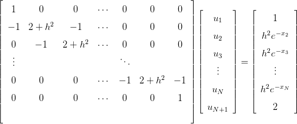
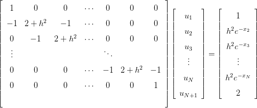
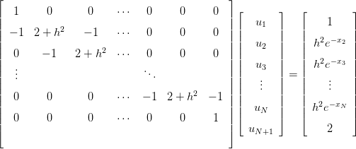
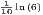
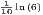
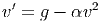
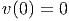
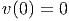
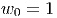
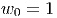

e, logo após, na segunda linha de comando,
a variável y recebe o valor double . Observamos que o símbolo = significa o
operador de atribuição não o de igualdade. O operador lógico de igualdade no
Scilab é ==.
e, logo após, na segunda linha de comando,
a variável y recebe o valor double . Observamos que o símbolo = significa o
operador de atribuição não o de igualdade. O operador lógico de igualdade no
Scilab é ==.
Scilab é uma linguagem interpretada em que todas as variáveis são matrizes. Uma variável é criada quando um valor é atribuído a ela. Por exemplo:
a variável x recebe o valor double e, logo após, na segunda linha de comando,
a variável y recebe o valor double . Observamos que o símbolo = significa o
operador de atribuição não o de igualdade. O operador lógico de igualdade no
Scilab é ==.
Comentários e continuação de linha de comando são usados como no seguinte exemplo:
No Scilab, os operadores matemáticos elementares são os seguintes:
Várias funções e constantes elementares já estão pré-definidas no Scilab. Por exemplo:
Para mais informações sobre quais as funções e constantes pré-definidas no Scilab, consulte o manual, seções “Funções elementares” e o carácter especial “%".
No Scilab, o valor lógico verdadeiro é escrito como %T e o valor lógico falso como %F. Temos os seguintes operadores lógicos disponíveis:
Solução. No Scilab, temos:

10.3 Ordem de precisão
Considere o problema de valor inicial dado por

 em função do
espaçamento da malha
em função do
espaçamento da malha  . Se
. Se  pode ser aproximado por uma expressão que
depende de
pode ser aproximado por uma expressão que
depende de  ,
,  ,
,  ,
,  ,
,  ,
,  , com erro da ordem de
, com erro da ordem de  ,
ou seja,
,
ou seja,
 | (10.8) |
para cada função analítica  , dizemos que o método tem erro de truncamento
da ordem de
, dizemos que o método tem erro de truncamento
da ordem de  ou ordem de precisão
ou ordem de precisão  . Essa afirmação faz sentido
quando fazemos a seguinte análise informal: para aproximar
. Essa afirmação faz sentido
quando fazemos a seguinte análise informal: para aproximar  , acumulamos
erros da ordem
, acumulamos
erros da ordem  , para calcular
, para calcular  acumulamos os erros de
acumulamos os erros de  e novos
erros
e novos
erros  . Para calcular
. Para calcular  , acumulamos todos os erros até
, acumulamos todos os erros até  , ou seja,
, ou seja,
 vezes
vezes  . Como
. Como  , temos que os erros ao calcular
, temos que os erros ao calcular  são
da ordem
são
da ordem  . É verdade que essa análise só vale quando impomos
condições de suavidade para
. É verdade que essa análise só vale quando impomos
condições de suavidade para  e condições adequada para a expressão
. Para explicar melhor esse pequeno texto,
fazemos em detalhes essa operação para o método de Euler na seção
10.3.1.
e condições adequada para a expressão
. Para explicar melhor esse pequeno texto,
fazemos em detalhes essa operação para o método de Euler na seção
10.3.1.
Primeiro lembramos da expressão (10.4) que origina a seguinte relação de recorrência:
Para entender melhor o motivo de na expressão (10.9) aparecer  e o método ser de precisão 1, vamos a seguinte análise informal: observemos que é a aproximação pelo método de Euler para o valor exato .
Subsequentemente, temos
é a aproximação pelo método de Euler para o valor exato .
Subsequentemente, temos  , temos ou seja, o erro entre o valor exato e o aproximado é de ordem . Uma
demonstração mais formal que garante que o erro é limitado por uma expressão
que é proporcional a
, temos ou seja, o erro entre o valor exato e o aproximado é de ordem . Uma
demonstração mais formal que garante que o erro é limitado por uma expressão
que é proporcional a  está discutido na seção 10.4.1.
está discutido na seção 10.4.1.
Para obter o erro de precisão do método de Euler Melhorado vamos calcular o erro de truncamento do método, ou seja, precisamos demonstrar que:
 | (10.11) |
De fato, tomando a diferença do termo da esquerda o os termos da direita, temos:

 e a equação
diferencial
e a equação
diferencial  . Portanto,
. Portanto, 
>>>>>> 2ce5bba22e77a9b0d17e57fb0d2efc8029204145
=======
>>>>>> c2790254e7e5196a945409616a59006dc5a6f1d1
id="tailmainse48.html">
 , então
, então  é maior ou igual a 1 e menor que 3?
é maior ou igual a 1 e menor que 3?